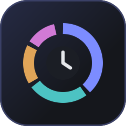

<!doctype html>
<html lang="en">
  <head>
    <meta charset="utf-8" />
    <title>Vitrine do Painel de Trabalho</title>
    <!-- Monta a capa e os prints do catálogo (1600×1000) com o painel de demonstração em iframes.
         ?modo=capa|resumo|historico|foco -->
    <style>
      @font-face { font-family: 'Geist'; src: url('../../panel/fonts/geist-latin-wght-normal.woff2') format('woff2'); font-weight: 100 900; }
      @font-face { font-family: 'Geist Mono'; src: url('../../panel/fonts/geist-mono-latin-wght-normal.woff2') format('woff2'); font-weight: 100 900; }
      :root { --bg: #0e1015; --fg: #e6e8ec; --mut: #8c93a1; --acc: #7c8cff; --line: #2a2e37; }
      * { box-sizing: border-box; }
      html, body { margin: 0; width: 1600px; height: 1000px; overflow: hidden; background: var(--bg); color: var(--fg); font-family: 'Geist', system-ui, sans-serif; }
      body { background: radial-gradient(90% 80% at 0% 0%, #1d2140 0%, transparent 60%), radial-gradient(70% 70% at 100% 100%, #152a2a 0%, transparent 60%), var(--bg); }
      .palco { position: absolute; inset: 0; display: grid; grid-template-columns: 560px 1fr; gap: 56px; padding: 80px 72px; align-items: center; }
      .texto { display: grid; gap: 22px; align-content: center; }
      .marca { display: flex; align-items: center; gap: 14px; font-size: 20px; font-weight: 600; color: var(--mut); }
      .marca img { width: 52px; height: 52px; }
      h1 { margin: 0; font-size: 58px; line-height: 1.04; letter-spacing: -0.03em; font-weight: 700; text-wrap: balance; }
      h1 em { font-style: normal; color: var(--acc); }
      p { margin: 0; font-size: 21px; line-height: 1.5; color: var(--mut); max-width: 30ch; }
      ul { margin: 0; padding: 0; list-style: none; display: grid; gap: 12px; font-size: 19px; }
      li { display: flex; gap: 12px; align-items: baseline; }
      li::before { content: ''; flex: none; width: 8px; height: 8px; border-radius: 2px; background: var(--acc); transform: translateY(-2px); }
      li:nth-child(2)::before { background: #4cc3c3; }
      li:nth-child(3)::before { background: #e0a458; }
      li:nth-child(4)::before { background: #d17ad6; }
      .selo { display: inline-flex; gap: 8px; align-items: center; font-family: 'Geist Mono', monospace; font-size: 14px; color: var(--mut); border: 1px solid var(--line); border-radius: 999px; padding: 6px 14px; width: fit-content; }
      .telas { display: flex; gap: 28px; justify-content: center; align-items: flex-start; height: 100%; }
      .tela { width: 380px; height: 840px; border-radius: 16px; overflow: hidden; border: 1px solid #323858; box-shadow: 0 40px 80px -30px rgba(0, 0, 0, 0.7), 0 0 0 6px rgba(124, 140, 255, 0.05); flex: none; background: #15171c; }
      .tela.baixa { margin-top: 70px; }
      .tela iframe { width: 380px; height: 840px; border: 0; display: block; }
    </style>
  </head>
  <body>
    <div class="palco">
      <div class="texto" id="texto"></div>
      <div class="telas" id="telas"></div>
    </div>
    <script>
      const modos = {
        capa: {
          titulo: 'See <em>what you worked on</em>, without leaving Orca.',
          sub: 'Active time, tokens, cost, commits and pomodoro by day, week and month. All read from your own machine.',
          lista: [],
          telas: ['tipo=semana', 'tipo=dia&aba=sessoes&pomo=pausa']
        },
        resumo: {
          titulo: 'Your day, week and month at a glance.',
          sub: '',
          lista: ['Agent active time, never double counting parallel agents', 'Where the time went, project by project', 'Estimated cost and tokens per model', 'Compared with the previous period'],
          telas: ['tipo=semana', 'tipo=mes&metrica=custo&pomo=parado']
        },
        historico: {
          titulo: 'Every session and every commit, in one place.',
          sub: '',
          lista: ['Claude Code and Codex sessions with title, project and branch', 'Your commits across all your repositories', 'Worktrees count toward their main project', 'History kept even after transcripts are deleted'],
          telas: ['tipo=semana&aba=sessoes&pomo=parado', 'tipo=semana&aba=commits&pomo=parado']
        },
        foco: {
          titulo: 'Pomodoro and tasks next to your code.',
          sub: '',
          lista: ['Pomodoro in the panel and in Orca’s status bar', 'A notification at the end of each focus and break', 'A to-do list that feeds the report', 'In English, Português, Español and 中文'],
          telas: ['tipo=dia&aba=tarefas&pomo=foco', 'lang=pt-BR&tipo=dia&pomo=pausa&metrica=focoMin']
        }
      }
      const modo = modos[new URLSearchParams(location.search).get('modo') || 'capa']
      const texto = document.getElementById('texto')
      texto.innerHTML = `<div class="marca">Painel de Trabalho · Orca plugin</div><h1>${modo.titulo}</h1>`
      if (modo.sub) texto.insertAdjacentHTML('beforeend', `<p>${modo.sub}</p>`)
      if (modo.lista.length) texto.insertAdjacentHTML('beforeend', `<ul>${modo.lista.map((i) => `<li>${i}</li>`).join('')}</ul>`)
      texto.insertAdjacentHTML('beforeend', '<span class="selo">100% local · no network · no tracking</span>')
      document.getElementById('telas').innerHTML = modo.telas
        .map((q, i) => `<div class="tela${i === 1 ? ' baixa' : ''}"><iframe src="demo.html?${q.includes('lang=') ? '' : `lang=${new URLSearchParams(location.search).get('lang') || 'en'}&`}${q}" title="Demo panel"></iframe></div>`)
        .join('')
    </script>
  </body>
</html>
